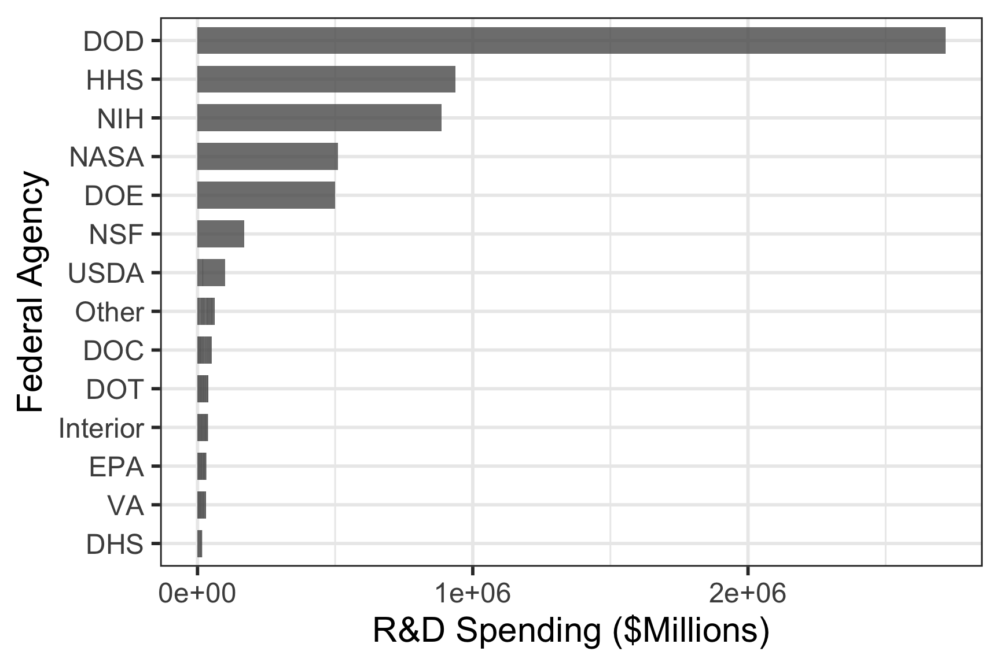

#> # A tibble: 6 × 15
#> year DHS DOC DOD DOE DOT EPA HHS Interior NASA NIH NSF
#> <dbl> <dbl> <dbl> <dbl> <dbl> <dbl> <dbl> <dbl> <dbl> <dbl> <dbl> <dbl>
#> 1 1976 0 819 35696 10882 1142 968 9226 1152 12513 8025 2372
#> 2 1977 0 837 37967 13741 1095 966 9507 1082 12553 8214 2395
#> 3 1978 0 871 37022 15663 1156 1175 10533 1125 12516 8802 2446
#> 4 1979 0 952 37174 15612 1004 1102 10127 1176 13079 9243 2404
#> 5 1980 0 945 37005 15226 1048 903 10045 1082 13837 9093 2407
#> 6 1981 0 829 41737 14798 978 901 9644 990 13276 8580 2300
#> # ℹ 3 more variables: Other <dbl>, USDA <dbl>, VA <dbl>4 Tidy Data
Learning Objectives
- Reshape data between long and wide formats.
- Wrangle and format data, including dealing with messy Excel files.
- Merge multiple datasets effectively.
- Clean, organize, and recode variables.
- Handle and process date data.
4.1 “Wide” and “Long” Formatted Data
The Data: Federal R&D Spending by Department
“Wide” format
#> # A tibble: 6 × 15
#> year DHS DOC DOD DOE DOT EPA HHS Interior NASA NIH NSF
#> <dbl> <dbl> <dbl> <dbl> <dbl> <dbl> <dbl> <dbl> <dbl> <dbl> <dbl> <dbl>
#> 1 1976 0 819 35696 10882 1142 968 9226 1152 12513 8025 2372
#> 2 1977 0 837 37967 13741 1095 966 9507 1082 12553 8214 2395
#> 3 1978 0 871 37022 15663 1156 1175 10533 1125 12516 8802 2446
#> 4 1979 0 952 37174 15612 1004 1102 10127 1176 13079 9243 2404
#> 5 1980 0 945 37005 15226 1048 903 10045 1082 13837 9093 2407
#> 6 1981 0 829 41737 14798 978 901 9644 990 13276 8580 2300
#> # ℹ 3 more variables: Other <dbl>, USDA <dbl>, VA <dbl>Dimensions:
#> [1] 42 15“Long” format
#> # A tibble: 6 × 3
#> department year rd_budget_mil
#> <chr> <dbl> <dbl>
#> 1 DOD 1976 35696
#> 2 NASA 1976 12513
#> 3 DOE 1976 10882
#> 4 HHS 1976 9226
#> 5 NIH 1976 8025
#> 6 NSF 1976 2372Dimensions:
#> [1] 588 3Tidy data = “Long” format
- Each variable has its own column
- Each observation has its own row

Do the names describe the values?
Yes: “Long” format
#> # A tibble: 6 × 3
#> department year rd_budget_mil
#> <chr> <dbl> <dbl>
#> 1 DOD 1976 35696
#> 2 NASA 1976 12513
#> 3 DOE 1976 10882
#> 4 HHS 1976 9226
#> 5 NIH 1976 8025
#> 6 NSF 1976 2372No: “Wide” format
#> # A tibble: 6 × 8
#> year DHS DOC DOD DOE DOT EPA HHS
#> <dbl> <dbl> <dbl> <dbl> <dbl> <dbl> <dbl> <dbl>
#> 1 1976 0 819 35696 10882 1142 968 9226
#> 2 1977 0 837 37967 13741 1095 966 9507
#> 3 1978 0 871 37022 15663 1156 1175 10533
#> 4 1979 0 952 37174 15612 1004 1102 10127
#> 5 1980 0 945 37005 15226 1048 903 10045
#> 6 1981 0 829 41737 14798 978 901 9644Reshaping data
pivot_longer() and pivot_wider()

From “long” to “wide” with pivot_wider()
head(fed_spend_long)#> # A tibble: 6 × 3
#> department year rd_budget_mil
#> <chr> <dbl> <dbl>
#> 1 DOD 1976 35696
#> 2 NASA 1976 12513
#> 3 DOE 1976 10882
#> 4 HHS 1976 9226
#> 5 NIH 1976 8025
#> 6 NSF 1976 2372fed_spend_wide <- fed_spend_long %>%
pivot_wider(
names_from = department, #<<
values_from = rd_budget_mil) #<<
head(fed_spend_wide)#> # A tibble: 6 × 15
#> year DOD NASA DOE HHS NIH NSF USDA Interior DOT EPA DOC
#> <dbl> <dbl> <dbl> <dbl> <dbl> <dbl> <dbl> <dbl> <dbl> <dbl> <dbl> <dbl>
#> 1 1976 35696 12513 10882 9226 8025 2372 1837 1152 1142 968 819
#> 2 1977 37967 12553 13741 9507 8214 2395 1796 1082 1095 966 837
#> 3 1978 37022 12516 15663 10533 8802 2446 1962 1125 1156 1175 871
#> 4 1979 37174 13079 15612 10127 9243 2404 2054 1176 1004 1102 952
#> 5 1980 37005 13837 15226 10045 9093 2407 1887 1082 1048 903 945
#> 6 1981 41737 13276 14798 9644 8580 2300 1964 990 978 901 829
#> # ℹ 3 more variables: DHS <dbl>, VA <dbl>, Other <dbl>4.1.0.1 From “wide” to “long” with pivot_longer()
head(fed_spend_wide)#> # A tibble: 6 × 15
#> year DOD NASA DOE HHS NIH NSF USDA Interior DOT EPA DOC
#> <dbl> <dbl> <dbl> <dbl> <dbl> <dbl> <dbl> <dbl> <dbl> <dbl> <dbl> <dbl>
#> 1 1976 35696 12513 10882 9226 8025 2372 1837 1152 1142 968 819
#> 2 1977 37967 12553 13741 9507 8214 2395 1796 1082 1095 966 837
#> 3 1978 37022 12516 15663 10533 8802 2446 1962 1125 1156 1175 871
#> 4 1979 37174 13079 15612 10127 9243 2404 2054 1176 1004 1102 952
#> 5 1980 37005 13837 15226 10045 9093 2407 1887 1082 1048 903 945
#> 6 1981 41737 13276 14798 9644 8580 2300 1964 990 978 901 829
#> # ℹ 3 more variables: DHS <dbl>, VA <dbl>, Other <dbl>fed_spend_long <- fed_spend_wide %>%
pivot_longer(
names_to = "department", #<<
values_to = "rd_budget_mil", #<<
cols = DOD:Other) #<<
head(fed_spend_long)#> # A tibble: 6 × 3
#> year department rd_budget_mil
#> <dbl> <chr> <dbl>
#> 1 1976 DOD 35696
#> 2 1976 NASA 12513
#> 3 1976 DOE 10882
#> 4 1976 HHS 9226
#> 5 1976 NIH 8025
#> 6 1976 NSF 2372Can also set cols by selecting which columns not to use
names(fed_spend_wide)#> [1] "year" "DOD" "NASA" "DOE" "HHS" "NIH"
#> [7] "NSF" "USDA" "Interior" "DOT" "EPA" "DOC"
#> [13] "DHS" "VA" "Other"fed_spend_long <- fed_spend_wide %>%
pivot_longer(
names_to = "department",
values_to = "rd_budget_mil",
cols = -year) #<<
head(fed_spend_long)#> # A tibble: 6 × 3
#> year department rd_budget_mil
#> <dbl> <chr> <dbl>
#> 1 1976 DOD 35696
#> 2 1976 NASA 12513
#> 3 1976 DOE 10882
#> 4 1976 HHS 9226
#> 5 1976 NIH 8025
#> 6 1976 NSF 23724.2 Tidy data wrangling
What is tidy data wrangling? (a quick explanation with cute graphics, by Allison Horst)


Compute the total R&D spending in each year
head(fed_spend_wide)#> # A tibble: 6 × 15
#> year DOD NASA DOE HHS NIH NSF USDA Interior DOT EPA DOC
#> <dbl> <dbl> <dbl> <dbl> <dbl> <dbl> <dbl> <dbl> <dbl> <dbl> <dbl> <dbl>
#> 1 1976 35696 12513 10882 9226 8025 2372 1837 1152 1142 968 819
#> 2 1977 37967 12553 13741 9507 8214 2395 1796 1082 1095 966 837
#> 3 1978 37022 12516 15663 10533 8802 2446 1962 1125 1156 1175 871
#> 4 1979 37174 13079 15612 10127 9243 2404 2054 1176 1004 1102 952
#> 5 1980 37005 13837 15226 10045 9093 2407 1887 1082 1048 903 945
#> 6 1981 41737 13276 14798 9644 8580 2300 1964 990 978 901 829
#> # ℹ 3 more variables: DHS <dbl>, VA <dbl>, Other <dbl>Let’s compute the total R&D spending in each year
Approach 1: Create new total by adding each variable
fed_spend_wide %>%
mutate(total = DHS + DOC + DOD + DOE + DOT + EPA + HHS + Interior + NASA + NIH + NSF + Other + USDA + VA) %>%
select(year, total)#> # A tibble: 42 × 2
#> year total
#> <dbl> <dbl>
#> 1 1976 86227
#> 2 1977 91807
#> 3 1978 94864
#> 4 1979 96601
#> 5 1980 96305
#> 6 1981 98304
#> # ℹ 36 more rowsApproach 2: Reshape first, then summarise
fed_spend_long <- fed_spend_wide %>%
pivot_longer(
names_to = "department",
values_to = "rd_budget_mil",
cols = -year)
head(fed_spend_long)#> # A tibble: 6 × 3
#> year department rd_budget_mil
#> <dbl> <chr> <dbl>
#> 1 1976 DOD 35696
#> 2 1976 NASA 12513
#> 3 1976 DOE 10882
#> 4 1976 HHS 9226
#> 5 1976 NIH 8025
#> 6 1976 NSF 2372fed_spend_long %>%
group_by(year) %>%
summarise(total = sum(rd_budget_mil))#> # A tibble: 42 × 2
#> year total
#> <dbl> <dbl>
#> 1 1976 86227
#> 2 1977 91807
#> 3 1978 94864
#> 4 1979 96601
#> 5 1980 96305
#> 6 1981 98304
#> # ℹ 36 more rowstotal <- fed_spend_wide %>%
pivot_longer(
names_to = "department",
values_to = "rd_budget_mil",
cols = -year) %>%
group_by(year) %>%
summarise(total = sum(rd_budget_mil))head(total)#> # A tibble: 6 × 2
#> year total
#> <dbl> <dbl>
#> 1 1976 86227
#> 2 1977 91807
#> 3 1978 94864
#> 4 1979 96601
#> 5 1980 96305
#> 6 1981 983044.3 Tidy data vizualization
head(fed_spend_wide)#> # A tibble: 6 × 15
#> year DOD NASA DOE HHS NIH NSF USDA Interior DOT EPA DOC
#> <dbl> <dbl> <dbl> <dbl> <dbl> <dbl> <dbl> <dbl> <dbl> <dbl> <dbl> <dbl>
#> 1 1976 35696 12513 10882 9226 8025 2372 1837 1152 1142 968 819
#> 2 1977 37967 12553 13741 9507 8214 2395 1796 1082 1095 966 837
#> 3 1978 37022 12516 15663 10533 8802 2446 1962 1125 1156 1175 871
#> 4 1979 37174 13079 15612 10127 9243 2404 2054 1176 1004 1102 952
#> 5 1980 37005 13837 15226 10045 9093 2407 1887 1082 1048 903 945
#> 6 1981 41737 13276 14798 9644 8580 2300 1964 990 978 901 829
#> # ℹ 3 more variables: DHS <dbl>, VA <dbl>, Other <dbl>
ggplot(fed_spend_wide) +
geom_col(aes(x = rd_budget_mil, y = department)) + #<<
theme_bw() +
labs(
x = "R&D Spending ($Millions)",
y = "Federal Agency"
)#> Error in `geom_col()`:
#> ! Problem while computing aesthetics.
#> ℹ Error occurred in the 1st layer.
#> Caused by error:
#> ! object 'rd_budget_mil' not foundfed_spend_wide %>%
pivot_longer( #<<
names_to = "department", #<<
values_to = "rd_budget_mil", #<<
cols = -year #<<
) %>%
ggplot() +
geom_col(aes(x = rd_budget_mil, y = department)) +
theme_bw() +
labs(
x = "R&D Spending ($Millions)",
y = "Federal Agency"
)4.4 Merging Data Sets with Joins
To start off, let’s take a look at this map. What’s wrong with it?
Clearly, the abbreviations are all mixed up. The likely culprit: merging two columns
head(names)#> state_name
#> 1 Alabama
#> 2 Alaska
#> 3 Arizona
#> 4 Arkansas
#> 5 California
#> 6 Coloradohead(abbs)#> state_abb
#> 1 AK
#> 2 AL
#> 3 AR
#> 4 AZ
#> 5 CA
#> 6 COresult <- bind_cols(names, abbs)
head(result)#> state_name state_abb
#> 1 Alabama AK
#> 2 Alaska AL
#> 3 Arizona AR
#> 4 Arkansas AZ
#> 5 California CA
#> 6 Colorado COAs shown above, simply binding or merging two data sets is not the best choice. This is where joins come into play.
There are three types of joins that we can utilize to properly merge data sets.
inner_join()left_join()/right_join()full_join()
Take a look at the different joins applied to the band_members & band_instruments data sets.
band_members#> # A tibble: 3 × 2
#> name band
#> <chr> <chr>
#> 1 Mick Stones
#> 2 John Beatles
#> 3 Paul Beatlesband_instruments#> # A tibble: 3 × 2
#> name plays
#> <chr> <chr>
#> 1 John guitar
#> 2 Paul bass
#> 3 Keith guitarinner_join()
band_members %>%
inner_join(band_instruments)#> # A tibble: 2 × 3
#> name band plays
#> <chr> <chr> <chr>
#> 1 John Beatles guitar
#> 2 Paul Beatles bass
full_join()
band_members %>%
full_join(band_instruments)#> # A tibble: 4 × 3
#> name band plays
#> <chr> <chr> <chr>
#> 1 Mick Stones <NA>
#> 2 John Beatles guitar
#> 3 Paul Beatles bass
#> 4 Keith <NA> guitar
left_join()
band_members %>%
left_join(band_instruments)#> # A tibble: 3 × 3
#> name band plays
#> <chr> <chr> <chr>
#> 1 Mick Stones <NA>
#> 2 John Beatles guitar
#> 3 Paul Beatles bass
right_join()
band_members %>%
right_join(band_instruments)#> # A tibble: 3 × 3
#> name band plays
#> <chr> <chr> <chr>
#> 1 John Beatles guitar
#> 2 Paul Beatles bass
#> 3 Keith <NA> guitar
We can also specify the joining variable name
band_members %>%
left_join(band_instruments)#> Joining with `by = join_by(name)`#> # A tibble: 3 × 3
#> name band plays
#> <chr> <chr> <chr>
#> 1 Mick Stones <NA>
#> 2 John Beatles guitar
#> 3 Paul Beatles bassband_members %>%
left_join(
band_instruments,
by = 'name' #<<
)#> # A tibble: 3 × 3
#> name band plays
#> <chr> <chr> <chr>
#> 1 Mick Stones <NA>
#> 2 John Beatles guitar
#> 3 Paul Beatles bassIf the names differ, use by = c("left_name" = "joining_name")
band_members#> # A tibble: 3 × 2
#> name band
#> <chr> <chr>
#> 1 Mick Stones
#> 2 John Beatles
#> 3 Paul Beatlesband_instruments2#> # A tibble: 3 × 2
#> artist plays
#> <chr> <chr>
#> 1 John guitar
#> 2 Paul bass
#> 3 Keith guitarband_members %>%
left_join(
band_instruments2,
by = c("name" = "artist") #<<
) #> # A tibble: 3 × 3
#> name band plays
#> <chr> <chr> <chr>
#> 1 Mick Stones <NA>
#> 2 John Beatles guitar
#> 3 Paul Beatles bassOr, just rename the joining variable in a pipe.
band_members#> # A tibble: 3 × 2
#> name band
#> <chr> <chr>
#> 1 Mick Stones
#> 2 John Beatles
#> 3 Paul Beatlesband_instruments2#> # A tibble: 3 × 2
#> artist plays
#> <chr> <chr>
#> 1 John guitar
#> 2 Paul bass
#> 3 Keith guitarband_members %>%
rename(artist = name) %>% #<<
left_join(
band_instruments2,
by = "artist" #<<
)#> # A tibble: 3 × 3
#> artist band plays
#> <chr> <chr> <chr>
#> 1 Mick Stones <NA>
#> 2 John Beatles guitar
#> 3 Paul Beatles bass4.5 Variable Types and Names
4.5.1 Variable Types
Always check variable types after reading in data!
wind <- read_excel(here::here(
'data', 'US_State_Wind_Energy_Facts_2018.xlsx'))
glimpse(wind)#> Rows: 50
#> Columns: 7
#> $ Ranking <chr> "1.0", "2.0", "3.0", "4.0", "5.0", …
#> $ State <chr> "TEXAS", "OKLAHOMA", "IOWA", "CALIF…
#> $ `Installed Capacity (MW)` <dbl> 23262, 7495, 7312, 5686, 5110, 4464…
#> $ `Equivalent Homes Powered` <chr> "6235000.0", "2268000.0", "1935000.…
#> $ `Total Investment ($ Millions)` <chr> "42000.0", "13700.0", "14200.0", "1…
#> $ `Wind Projects Online` <dbl> 136, 45, 107, 104, 35, 49, 98, 31, …
#> $ `# of Wind Turbines` <chr> "12750.0", "3717.0", "4145.0", "697…Be careful converting strings to numbers!
as.numeric()
as.numeric(c("2.1", "3.7", "4.50"))#> [1] 2.1 3.7 4.5as.numeric(c("$2.1", "$3.7", "$4.50"))#> [1] NA NA NAparse_number()
parse_number(c("2.1", "3.7", "4.50"))#> [1] 2.1 3.7 4.5parse_number(c("$2.1", "$3.7", "$4.50"))#> [1] 2.1 3.7 4.5parse_number(c("1-800-123-4567"))#> [1] 1Once applied we get:
wind <- read_excel(here::here(
'data', 'US_State_Wind_Energy_Facts_2018.xlsx')) %>%
mutate(
Ranking = as.numeric(Ranking),#<<
`Equivalent Homes Powered` = as.numeric(`Equivalent Homes Powered`),#<<
`Total Investment ($ Millions)` = as.numeric(`Total Investment ($ Millions)`),#<<
`# of Wind Turbines` = as.numeric(`# of Wind Turbines`) #<<
)
glimpse(wind)#> Rows: 50
#> Columns: 7
#> $ Ranking <dbl> 1, 2, 3, 4, 5, 6, 7, 8, 9, 10, 11, …
#> $ State <chr> "TEXAS", "OKLAHOMA", "IOWA", "CALIF…
#> $ `Installed Capacity (MW)` <dbl> 23262, 7495, 7312, 5686, 5110, 4464…
#> $ `Equivalent Homes Powered` <dbl> 6235000, 2268000, 1935000, 1298000,…
#> $ `Total Investment ($ Millions)` <dbl> 42000, 13700, 14200, 12600, 9400, 8…
#> $ `Wind Projects Online` <dbl> 136, 45, 107, 104, 35, 49, 98, 31, …
#> $ `# of Wind Turbines` <dbl> 12750, 3717, 4145, 6972, 2795, 2632…4.5.2 Renaming made easy
janitor::clean_names()
The janitor package is a great tool to “clean” names of columns in data sets.
If we take the wind data ..
wind <- read_excel(here::here(
'data', 'US_State_Wind_Energy_Facts_2018.xlsx'))
glimpse(wind)#> Rows: 50
#> Columns: 7
#> $ Ranking <chr> "1.0", "2.0", "3.0", "4.0", "5.0", …
#> $ State <chr> "TEXAS", "OKLAHOMA", "IOWA", "CALIF…
#> $ `Installed Capacity (MW)` <dbl> 23262, 7495, 7312, 5686, 5110, 4464…
#> $ `Equivalent Homes Powered` <chr> "6235000.0", "2268000.0", "1935000.…
#> $ `Total Investment ($ Millions)` <chr> "42000.0", "13700.0", "14200.0", "1…
#> $ `Wind Projects Online` <dbl> 136, 45, 107, 104, 35, 49, 98, 31, …
#> $ `# of Wind Turbines` <chr> "12750.0", "3717.0", "4145.0", "697….. and use janitor, we can easily “clean” the names.
library(janitor) #<<
wind <- read_excel(here::here(
'data', 'US_State_Wind_Energy_Facts_2018.xlsx')) %>%
clean_names() #<<
glimpse(wind)#> Rows: 50
#> Columns: 7
#> $ ranking <chr> "1.0", "2.0", "3.0", "4.0", "5.0", "6.0",…
#> $ state <chr> "TEXAS", "OKLAHOMA", "IOWA", "CALIFORNIA"…
#> $ installed_capacity_mw <dbl> 23262, 7495, 7312, 5686, 5110, 4464, 3699…
#> $ equivalent_homes_powered <chr> "6235000.0", "2268000.0", "1935000.0", "1…
#> $ total_investment_millions <chr> "42000.0", "13700.0", "14200.0", "12600.0…
#> $ wind_projects_online <dbl> 136, 45, 107, 104, 35, 49, 98, 31, 25, 20…
#> $ number_of_wind_turbines <chr> "12750.0", "3717.0", "4145.0", "6972.0", …We can even change the style of the names.
library(janitor) #<<
wind <- read_excel(here::here(
'data', 'US_State_Wind_Energy_Facts_2018.xlsx')) %>%
clean_names(case = 'lower_camel') #<<
glimpse(wind)#> Rows: 50
#> Columns: 7
#> $ ranking <chr> "1.0", "2.0", "3.0", "4.0", "5.0", "6.0", "…
#> $ state <chr> "TEXAS", "OKLAHOMA", "IOWA", "CALIFORNIA", …
#> $ installedCapacityMw <dbl> 23262, 7495, 7312, 5686, 5110, 4464, 3699, …
#> $ equivalentHomesPowered <chr> "6235000.0", "2268000.0", "1935000.0", "129…
#> $ totalInvestmentMillions <chr> "42000.0", "13700.0", "14200.0", "12600.0",…
#> $ windProjectsOnline <dbl> 136, 45, 107, 104, 35, 49, 98, 31, 25, 20, …
#> $ numberOfWindTurbines <chr> "12750.0", "3717.0", "4145.0", "6972.0", "2…library(janitor) #<<
wind <- read_excel(here::here(
'data', 'US_State_Wind_Energy_Facts_2018.xlsx')) %>%
clean_names(case = 'screaming_snake') #<<
glimpse(wind)#> Rows: 50
#> Columns: 7
#> $ RANKING <chr> "1.0", "2.0", "3.0", "4.0", "5.0", "6.0",…
#> $ STATE <chr> "TEXAS", "OKLAHOMA", "IOWA", "CALIFORNIA"…
#> $ INSTALLED_CAPACITY_MW <dbl> 23262, 7495, 7312, 5686, 5110, 4464, 3699…
#> $ EQUIVALENT_HOMES_POWERED <chr> "6235000.0", "2268000.0", "1935000.0", "1…
#> $ TOTAL_INVESTMENT_MILLIONS <chr> "42000.0", "13700.0", "14200.0", "12600.0…
#> $ WIND_PROJECTS_ONLINE <dbl> 136, 45, 107, 104, 35, 49, 98, 31, 25, 20…
#> $ NUMBER_OF_WIND_TURBINES <chr> "12750.0", "3717.0", "4145.0", "6972.0", …select() : More Powerful Than You Probably Thought
Example: data on sleeping patterns of different mammals
glimpse(msleep)#> Rows: 83
#> Columns: 11
#> $ name <chr> "Cheetah", "Owl monkey", "Mountain beaver", "Greater s…
#> $ genus <chr> "Acinonyx", "Aotus", "Aplodontia", "Blarina", "Bos", "…
#> $ vore <chr> "carni", "omni", "herbi", "omni", "herbi", "herbi", "c…
#> $ order <chr> "Carnivora", "Primates", "Rodentia", "Soricomorpha", "…
#> $ conservation <chr> "lc", NA, "nt", "lc", "domesticated", NA, "vu", NA, "d…
#> $ sleep_total <dbl> 12.1, 17.0, 14.4, 14.9, 4.0, 14.4, 8.7, 7.0, 10.1, 3.0…
#> $ sleep_rem <dbl> NA, 1.8, 2.4, 2.3, 0.7, 2.2, 1.4, NA, 2.9, NA, 0.6, 0.…
#> $ sleep_cycle <dbl> NA, NA, NA, 0.1333333, 0.6666667, 0.7666667, 0.3833333…
#> $ awake <dbl> 11.9, 7.0, 9.6, 9.1, 20.0, 9.6, 15.3, 17.0, 13.9, 21.0…
#> $ brainwt <dbl> NA, 0.01550, NA, 0.00029, 0.42300, NA, NA, NA, 0.07000…
#> $ bodywt <dbl> 50.000, 0.480, 1.350, 0.019, 600.000, 3.850, 20.490, 0…Use select() to choose which columns to keep
msleep %>%
select(name:order, sleep_total:sleep_cycle) %>% #<<
glimpse()#> Rows: 83
#> Columns: 7
#> $ name <chr> "Cheetah", "Owl monkey", "Mountain beaver", "Greater sh…
#> $ genus <chr> "Acinonyx", "Aotus", "Aplodontia", "Blarina", "Bos", "B…
#> $ vore <chr> "carni", "omni", "herbi", "omni", "herbi", "herbi", "ca…
#> $ order <chr> "Carnivora", "Primates", "Rodentia", "Soricomorpha", "A…
#> $ sleep_total <dbl> 12.1, 17.0, 14.4, 14.9, 4.0, 14.4, 8.7, 7.0, 10.1, 3.0,…
#> $ sleep_rem <dbl> NA, 1.8, 2.4, 2.3, 0.7, 2.2, 1.4, NA, 2.9, NA, 0.6, 0.8…
#> $ sleep_cycle <dbl> NA, NA, NA, 0.1333333, 0.6666667, 0.7666667, 0.3833333,…Use select() to choose which columns to drop
msleep %>%
select(-(name:order)) %>%
glimpse()#> Rows: 83
#> Columns: 7
#> $ conservation <chr> "lc", NA, "nt", "lc", "domesticated", NA, "vu", NA, "d…
#> $ sleep_total <dbl> 12.1, 17.0, 14.4, 14.9, 4.0, 14.4, 8.7, 7.0, 10.1, 3.0…
#> $ sleep_rem <dbl> NA, 1.8, 2.4, 2.3, 0.7, 2.2, 1.4, NA, 2.9, NA, 0.6, 0.…
#> $ sleep_cycle <dbl> NA, NA, NA, 0.1333333, 0.6666667, 0.7666667, 0.3833333…
#> $ awake <dbl> 11.9, 7.0, 9.6, 9.1, 20.0, 9.6, 15.3, 17.0, 13.9, 21.0…
#> $ brainwt <dbl> NA, 0.01550, NA, 0.00029, 0.42300, NA, NA, NA, 0.07000…
#> $ bodywt <dbl> 50.000, 0.480, 1.350, 0.019, 600.000, 3.850, 20.490, 0…We can also select columns based on partial column names
For example, we can select columns that start with “sleep”:
msleep %>%
select(name, starts_with("sleep")) %>%
glimpse()#> Rows: 83
#> Columns: 4
#> $ name <chr> "Cheetah", "Owl monkey", "Mountain beaver", "Greater sh…
#> $ sleep_total <dbl> 12.1, 17.0, 14.4, 14.9, 4.0, 14.4, 8.7, 7.0, 10.1, 3.0,…
#> $ sleep_rem <dbl> NA, 1.8, 2.4, 2.3, 0.7, 2.2, 1.4, NA, 2.9, NA, 0.6, 0.8…
#> $ sleep_cycle <dbl> NA, NA, NA, 0.1333333, 0.6666667, 0.7666667, 0.3833333,…Or we can select columns that contain “eep” and end with “wt”:
msleep %>%
select(contains("eep"), ends_with("wt")) %>%
glimpse()#> Rows: 83
#> Columns: 5
#> $ sleep_total <dbl> 12.1, 17.0, 14.4, 14.9, 4.0, 14.4, 8.7, 7.0, 10.1, 3.0,…
#> $ sleep_rem <dbl> NA, 1.8, 2.4, 2.3, 0.7, 2.2, 1.4, NA, 2.9, NA, 0.6, 0.8…
#> $ sleep_cycle <dbl> NA, NA, NA, 0.1333333, 0.6666667, 0.7666667, 0.3833333,…
#> $ brainwt <dbl> NA, 0.01550, NA, 0.00029, 0.42300, NA, NA, NA, 0.07000,…
#> $ bodywt <dbl> 50.000, 0.480, 1.350, 0.019, 600.000, 3.850, 20.490, 0.…Use select() to select columns based on their data type
Select only numeric columns:
msleep %>%
select_if(is.numeric) %>%
glimpse()#> Rows: 83
#> Columns: 6
#> $ sleep_total <dbl> 12.1, 17.0, 14.4, 14.9, 4.0, 14.4, 8.7, 7.0, 10.1, 3.0,…
#> $ sleep_rem <dbl> NA, 1.8, 2.4, 2.3, 0.7, 2.2, 1.4, NA, 2.9, NA, 0.6, 0.8…
#> $ sleep_cycle <dbl> NA, NA, NA, 0.1333333, 0.6666667, 0.7666667, 0.3833333,…
#> $ awake <dbl> 11.9, 7.0, 9.6, 9.1, 20.0, 9.6, 15.3, 17.0, 13.9, 21.0,…
#> $ brainwt <dbl> NA, 0.01550, NA, 0.00029, 0.42300, NA, NA, NA, 0.07000,…
#> $ bodywt <dbl> 50.000, 0.480, 1.350, 0.019, 600.000, 3.850, 20.490, 0.…Select only character columns:
msleep %>%
select_if(is.character) %>%
glimpse()#> Rows: 83
#> Columns: 5
#> $ name <chr> "Cheetah", "Owl monkey", "Mountain beaver", "Greater s…
#> $ genus <chr> "Acinonyx", "Aotus", "Aplodontia", "Blarina", "Bos", "…
#> $ vore <chr> "carni", "omni", "herbi", "omni", "herbi", "herbi", "c…
#> $ order <chr> "Carnivora", "Primates", "Rodentia", "Soricomorpha", "…
#> $ conservation <chr> "lc", NA, "nt", "lc", "domesticated", NA, "vu", NA, "d…Use select() to reorder variables
msleep %>%
select(everything()) %>%
glimpse()#> Rows: 83
#> Columns: 11
#> $ name <chr> "Cheetah", "Owl monkey", "Mountain beaver", "Greater s…
#> $ genus <chr> "Acinonyx", "Aotus", "Aplodontia", "Blarina", "Bos", "…
#> $ vore <chr> "carni", "omni", "herbi", "omni", "herbi", "herbi", "c…
#> $ order <chr> "Carnivora", "Primates", "Rodentia", "Soricomorpha", "…
#> $ conservation <chr> "lc", NA, "nt", "lc", "domesticated", NA, "vu", NA, "d…
#> $ sleep_total <dbl> 12.1, 17.0, 14.4, 14.9, 4.0, 14.4, 8.7, 7.0, 10.1, 3.0…
#> $ sleep_rem <dbl> NA, 1.8, 2.4, 2.3, 0.7, 2.2, 1.4, NA, 2.9, NA, 0.6, 0.…
#> $ sleep_cycle <dbl> NA, NA, NA, 0.1333333, 0.6666667, 0.7666667, 0.3833333…
#> $ awake <dbl> 11.9, 7.0, 9.6, 9.1, 20.0, 9.6, 15.3, 17.0, 13.9, 21.0…
#> $ brainwt <dbl> NA, 0.01550, NA, 0.00029, 0.42300, NA, NA, NA, 0.07000…
#> $ bodywt <dbl> 50.000, 0.480, 1.350, 0.019, 600.000, 3.850, 20.490, 0…msleep %>%
select(conservation, awake, everything()) %>%
glimpse()#> Rows: 83
#> Columns: 11
#> $ conservation <chr> "lc", NA, "nt", "lc", "domesticated", NA, "vu", NA, "d…
#> $ awake <dbl> 11.9, 7.0, 9.6, 9.1, 20.0, 9.6, 15.3, 17.0, 13.9, 21.0…
#> $ name <chr> "Cheetah", "Owl monkey", "Mountain beaver", "Greater s…
#> $ genus <chr> "Acinonyx", "Aotus", "Aplodontia", "Blarina", "Bos", "…
#> $ vore <chr> "carni", "omni", "herbi", "omni", "herbi", "herbi", "c…
#> $ order <chr> "Carnivora", "Primates", "Rodentia", "Soricomorpha", "…
#> $ sleep_total <dbl> 12.1, 17.0, 14.4, 14.9, 4.0, 14.4, 8.7, 7.0, 10.1, 3.0…
#> $ sleep_rem <dbl> NA, 1.8, 2.4, 2.3, 0.7, 2.2, 1.4, NA, 2.9, NA, 0.6, 0.…
#> $ sleep_cycle <dbl> NA, NA, NA, 0.1333333, 0.6666667, 0.7666667, 0.3833333…
#> $ brainwt <dbl> NA, 0.01550, NA, 0.00029, 0.42300, NA, NA, NA, 0.07000…
#> $ bodywt <dbl> 50.000, 0.480, 1.350, 0.019, 600.000, 3.850, 20.490, 0…Use select() to rename variables
Use rename() to just change the name
msleep %>%
rename( #<<
animal = name,
extinction_threat = conservation
) %>%
glimpse()#> Rows: 83
#> Columns: 11
#> $ animal <chr> "Cheetah", "Owl monkey", "Mountain beaver", "Grea…
#> $ genus <chr> "Acinonyx", "Aotus", "Aplodontia", "Blarina", "Bo…
#> $ vore <chr> "carni", "omni", "herbi", "omni", "herbi", "herbi…
#> $ order <chr> "Carnivora", "Primates", "Rodentia", "Soricomorph…
#> $ extinction_threat <chr> "lc", NA, "nt", "lc", "domesticated", NA, "vu", N…
#> $ sleep_total <dbl> 12.1, 17.0, 14.4, 14.9, 4.0, 14.4, 8.7, 7.0, 10.1…
#> $ sleep_rem <dbl> NA, 1.8, 2.4, 2.3, 0.7, 2.2, 1.4, NA, 2.9, NA, 0.…
#> $ sleep_cycle <dbl> NA, NA, NA, 0.1333333, 0.6666667, 0.7666667, 0.38…
#> $ awake <dbl> 11.9, 7.0, 9.6, 9.1, 20.0, 9.6, 15.3, 17.0, 13.9,…
#> $ brainwt <dbl> NA, 0.01550, NA, 0.00029, 0.42300, NA, NA, NA, 0.…
#> $ bodywt <dbl> 50.000, 0.480, 1.350, 0.019, 600.000, 3.850, 20.4…Use select() to change the name and drop everything else
msleep %>%
select( #<<
animal = name,
extinction_threat = conservation
) %>%
glimpse()#> Rows: 83
#> Columns: 2
#> $ animal <chr> "Cheetah", "Owl monkey", "Mountain beaver", "Grea…
#> $ extinction_threat <chr> "lc", NA, "nt", "lc", "domesticated", NA, "vu", N…Use select() to rename variables
Use rename() to just change the name
msleep %>%
rename( #<<
animal = name,
extinction_threat = conservation
) %>%
glimpse()#> Rows: 83
#> Columns: 11
#> $ animal <chr> "Cheetah", "Owl monkey", "Mountain beaver", "Grea…
#> $ genus <chr> "Acinonyx", "Aotus", "Aplodontia", "Blarina", "Bo…
#> $ vore <chr> "carni", "omni", "herbi", "omni", "herbi", "herbi…
#> $ order <chr> "Carnivora", "Primates", "Rodentia", "Soricomorph…
#> $ extinction_threat <chr> "lc", NA, "nt", "lc", "domesticated", NA, "vu", N…
#> $ sleep_total <dbl> 12.1, 17.0, 14.4, 14.9, 4.0, 14.4, 8.7, 7.0, 10.1…
#> $ sleep_rem <dbl> NA, 1.8, 2.4, 2.3, 0.7, 2.2, 1.4, NA, 2.9, NA, 0.…
#> $ sleep_cycle <dbl> NA, NA, NA, 0.1333333, 0.6666667, 0.7666667, 0.38…
#> $ awake <dbl> 11.9, 7.0, 9.6, 9.1, 20.0, 9.6, 15.3, 17.0, 13.9,…
#> $ brainwt <dbl> NA, 0.01550, NA, 0.00029, 0.42300, NA, NA, NA, 0.…
#> $ bodywt <dbl> 50.000, 0.480, 1.350, 0.019, 600.000, 3.850, 20.4…Use select() + everything() to change names and keep everything else
msleep %>%
select( #<<
animal = name,
extinction_threat = conservation,
everything()
) %>% #<<
glimpse()#> Rows: 83
#> Columns: 11
#> $ animal <chr> "Cheetah", "Owl monkey", "Mountain beaver", "Grea…
#> $ extinction_threat <chr> "lc", NA, "nt", "lc", "domesticated", NA, "vu", N…
#> $ genus <chr> "Acinonyx", "Aotus", "Aplodontia", "Blarina", "Bo…
#> $ vore <chr> "carni", "omni", "herbi", "omni", "herbi", "herbi…
#> $ order <chr> "Carnivora", "Primates", "Rodentia", "Soricomorph…
#> $ sleep_total <dbl> 12.1, 17.0, 14.4, 14.9, 4.0, 14.4, 8.7, 7.0, 10.1…
#> $ sleep_rem <dbl> NA, 1.8, 2.4, 2.3, 0.7, 2.2, 1.4, NA, 2.9, NA, 0.…
#> $ sleep_cycle <dbl> NA, NA, NA, 0.1333333, 0.6666667, 0.7666667, 0.38…
#> $ awake <dbl> 11.9, 7.0, 9.6, 9.1, 20.0, 9.6, 15.3, 17.0, 13.9,…
#> $ brainwt <dbl> NA, 0.01550, NA, 0.00029, 0.42300, NA, NA, NA, 0.…
#> $ bodywt <dbl> 50.000, 0.480, 1.350, 0.019, 600.000, 3.850, 20.4…4.6 Recoding Variables
4.6.1 Recoding with ifelse()
Example: Create a variable, cost_high, that is TRUE if the repair costs were greater than the median costs and FALSE otherwise.
wildlife_impacts1 <- wildlife_impacts %>%
rename(cost = cost_repairs_infl_adj) %>%
filter(!is.na(cost)) %>%
mutate(
cost_median = median(cost),
cost_high = ifelse(cost > cost_median, TRUE, FALSE) #<<
)
wildlife_impacts1 %>%
select(cost, cost_median, cost_high) %>%
head()#> # A tibble: 6 × 3
#> cost cost_median cost_high
#> <dbl> <dbl> <lgl>
#> 1 1000 26783 FALSE
#> 2 200 26783 FALSE
#> 3 10000 26783 FALSE
#> 4 100000 26783 TRUE
#> 5 20000 26783 FALSE
#> 6 487000 26783 TRUE4.6.2 Recoding with nested ifelse()
Create a variable, season, based on the incident_month variable.
wildlife_impacts2 <- wildlife_impacts %>%
mutate(season = ifelse( #<<
incident_month %in% c(3, 4, 5), 'spring', ifelse( #<<
incident_month %in% c(6, 7, 8), 'summer', ifelse( #<<
incident_month %in% c(9, 10, 11), 'fall', 'winter'))) #<<
)
wildlife_impacts2 %>%
distinct(incident_month, season) %>%
head()#> # A tibble: 6 × 2
#> incident_month season
#> <dbl> <chr>
#> 1 12 winter
#> 2 11 fall
#> 3 10 fall
#> 4 9 fall
#> 5 8 summer
#> 6 7 summer4.6.3 Recoding with case_when()
Create a variable, season, based on the incident_month variable.
Note: If you don’t include the final TRUE ~ 'winter' condition, you’ll get NA for those cases.
wildlife_impacts2 <- wildlife_impacts %>%
mutate(season = case_when( #<<
incident_month %in% c(3, 4, 5) ~ 'spring', #<<
incident_month %in% c(6, 7, 8) ~ 'summer', #<<
incident_month %in% c(9, 10, 11) ~ 'fall', #<<
TRUE ~ 'winter') #<<
)
wildlife_impacts2 %>%
distinct(incident_month, season) %>%
head()#> # A tibble: 6 × 2
#> incident_month season
#> <dbl> <chr>
#> 1 12 winter
#> 2 11 fall
#> 3 10 fall
#> 4 9 fall
#> 5 8 summer
#> 6 7 summerRecoding with case_when() with between()
Create a variable, season, based on the incident_month variable.
wildlife_impacts2 <- wildlife_impacts %>%
mutate(season = case_when(
between(incident_month, 3, 5) ~ 'spring', #<<
between(incident_month, 6, 8) ~ 'summer', #<<
between(incident_month, 9, 11) ~ 'fall', #<<
TRUE ~ 'winter')
)
wildlife_impacts2 %>%
distinct(incident_month, season) %>%
head()#> # A tibble: 6 × 2
#> incident_month season
#> <dbl> <chr>
#> 1 12 winter
#> 2 11 fall
#> 3 10 fall
#> 4 9 fall
#> 5 8 summer
#> 6 7 summercase_when() is “cleaner” than ifelse()
Convert the num_engs variable into a word of the number.
ifelse()
wildlife_impacts3 <- wildlife_impacts %>%
mutate(num_engs = ifelse(
num_engs == 1, 'one', ifelse(
num_engs == 2, 'two', ifelse(
num_engs == 3, 'three', ifelse(
num_engs == 4, 'four',
as.character(num_engs)))))
)
unique(wildlife_impacts3$num_engs)#> [1] "two" NA "three" "four" "one"case_when()
wildlife_impacts3 <- wildlife_impacts %>%
mutate(num_engs = case_when(
num_engs == 1 ~ 'one',
num_engs == 2 ~ 'two',
num_engs == 3 ~ 'three',
num_engs == 4 ~ 'four')
)
unique(wildlife_impacts3$num_engs)#> [1] "two" NA "three" "four" "one"4.6.4 Break a single variable into two with separate()
tb_rates#> # A tibble: 6 × 3
#> country year rate
#> <chr> <dbl> <chr>
#> 1 Afghanistan 1999 745/19987071
#> 2 Afghanistan 2000 2666/20595360
#> 3 Brazil 1999 37737/172006362
#> 4 Brazil 2000 80488/174504898
#> 5 China 1999 212258/1272915272
#> 6 China 2000 213766/1280428583tb_rates %>%
separate(rate, into = c("cases", "population")) #<<#> # A tibble: 6 × 4
#> country year cases population
#> <chr> <dbl> <chr> <chr>
#> 1 Afghanistan 1999 745 19987071
#> 2 Afghanistan 2000 2666 20595360
#> 3 Brazil 1999 37737 172006362
#> 4 Brazil 2000 80488 174504898
#> 5 China 1999 212258 1272915272
#> 6 China 2000 213766 12804285834.6.5 Break a single variable into two with separate()
tb_rates#> # A tibble: 6 × 3
#> country year rate
#> <chr> <dbl> <chr>
#> 1 Afghanistan 1999 745/19987071
#> 2 Afghanistan 2000 2666/20595360
#> 3 Brazil 1999 37737/172006362
#> 4 Brazil 2000 80488/174504898
#> 5 China 1999 212258/1272915272
#> 6 China 2000 213766/1280428583tb_rates %>%
separate(
rate, #<<
into = c("cases", "population"), #<<
sep = "/" #<<
)#> # A tibble: 6 × 4
#> country year cases population
#> <chr> <dbl> <chr> <chr>
#> 1 Afghanistan 1999 745 19987071
#> 2 Afghanistan 2000 2666 20595360
#> 3 Brazil 1999 37737 172006362
#> 4 Brazil 2000 80488 174504898
#> 5 China 1999 212258 1272915272
#> 6 China 2000 213766 1280428583tb_rates#> # A tibble: 6 × 3
#> country year rate
#> <chr> <dbl> <chr>
#> 1 Afghanistan 1999 745/19987071
#> 2 Afghanistan 2000 2666/20595360
#> 3 Brazil 1999 37737/172006362
#> 4 Brazil 2000 80488/174504898
#> 5 China 1999 212258/1272915272
#> 6 China 2000 213766/1280428583tb_rates %>%
separate(
rate,
into = c("cases", "population"),
sep = "/",
convert = TRUE #<<
)#> # A tibble: 6 × 4
#> country year cases population
#> <chr> <dbl> <int> <int>
#> 1 Afghanistan 1999 745 19987071
#> 2 Afghanistan 2000 2666 20595360
#> 3 Brazil 1999 37737 172006362
#> 4 Brazil 2000 80488 174504898
#> 5 China 1999 212258 1272915272
#> 6 China 2000 213766 1280428583You can also break up a variable by an index
tb_rates#> # A tibble: 6 × 3
#> country year rate
#> <chr> <dbl> <chr>
#> 1 Afghanistan 1999 745/19987071
#> 2 Afghanistan 2000 2666/20595360
#> 3 Brazil 1999 37737/172006362
#> 4 Brazil 2000 80488/174504898
#> 5 China 1999 212258/1272915272
#> 6 China 2000 213766/1280428583tb_rates %>%
separate(
year,
into = c("century", "year"), #<<
sep = 2 #<<
)#> # A tibble: 6 × 4
#> country century year rate
#> <chr> <chr> <chr> <chr>
#> 1 Afghanistan 19 99 745/19987071
#> 2 Afghanistan 20 00 2666/20595360
#> 3 Brazil 19 99 37737/172006362
#> 4 Brazil 20 00 80488/174504898
#> 5 China 19 99 212258/1272915272
#> 6 China 20 00 213766/12804285834.6.6 unite(): The opposite of separate()
tb_rates#> # A tibble: 6 × 3
#> country year rate
#> <chr> <dbl> <chr>
#> 1 Afghanistan 1999 745/19987071
#> 2 Afghanistan 2000 2666/20595360
#> 3 Brazil 1999 37737/172006362
#> 4 Brazil 2000 80488/174504898
#> 5 China 1999 212258/1272915272
#> 6 China 2000 213766/1280428583tb_rates %>%
separate(year, into = c("century", "year"),
sep = 2) %>%
unite(year_new, century, year) #<<#> # A tibble: 6 × 3
#> country year_new rate
#> <chr> <chr> <chr>
#> 1 Afghanistan 19_99 745/19987071
#> 2 Afghanistan 20_00 2666/20595360
#> 3 Brazil 19_99 37737/172006362
#> 4 Brazil 20_00 80488/174504898
#> 5 China 19_99 212258/1272915272
#> 6 China 20_00 213766/1280428583tb_rates#> # A tibble: 6 × 3
#> country year rate
#> <chr> <dbl> <chr>
#> 1 Afghanistan 1999 745/19987071
#> 2 Afghanistan 2000 2666/20595360
#> 3 Brazil 1999 37737/172006362
#> 4 Brazil 2000 80488/174504898
#> 5 China 1999 212258/1272915272
#> 6 China 2000 213766/1280428583tb_rates %>%
separate(year, into = c("century", "year"),
sep = 2) %>%
unite(year_new, century, year,
sep = "") #<<#> # A tibble: 6 × 3
#> country year_new rate
#> <chr> <chr> <chr>
#> 1 Afghanistan 1999 745/19987071
#> 2 Afghanistan 2000 2666/20595360
#> 3 Brazil 1999 37737/172006362
#> 4 Brazil 2000 80488/174504898
#> 5 China 1999 212258/1272915272
#> 6 China 2000 213766/12804285834.7 Dealing with Dates Data

4.7.1 Create Dates from Strings
order is the ONLY thing that matters!
Year-Month-Day
ymd('2020-02-26')#> [1] "2020-02-26"ymd('2020-02-26')#> [1] "2020-02-26"ymd('2020 Feb 26')#> [1] "2020-02-26"ymd('2020-02-26')#> [1] "2020-02-26"ymd('2020 Feb 26')#> [1] "2020-02-26"ymd('2020 Feb. 26')#> [1] "2020-02-26"ymd('2020 february 26')#> [1] "2020-02-26"Month-Day-Year
mdy('February 26, 2020')#> [1] "2020-02-26"mdy('Feb. 26, 2020')#> [1] "2020-02-26"mdy('Feb 26 2020')#> [1] "2020-02-26"Day-Month-Year
dmy('26 February 2020')#> [1] "2020-02-26"dmy('26 Feb. 2020')#> [1] "2020-02-26"dmy('26 Feb, 2020')#> [1] "2020-02-26"Check out the lubridate cheat sheet
4.7.2 Extracting information from dates
date <- today()
date#> [1] "2024-07-01"# Get the year
year(date)#> [1] 2024date <- today()
date#> [1] "2024-07-01"# Get the year
year(date)#> [1] 2024# Get the month
month(date)#> [1] 7# Get the month name
month(date, label = TRUE, abbr = FALSE)#> [1] July
#> 12 Levels: January < February < March < April < May < June < ... < December# Get the day
day(date)#> [1] 1# Get the weekday
wday(date)#> [1] 2# Get the weekday name
wday(date, label = TRUE, abbr = TRUE)#> [1] Mon
#> Levels: Sun < Mon < Tue < Wed < Thu < Fri < Sat4.7.3 Modifying date elements
date <- today()
date#> [1] "2024-07-01"# Change the year
year(date) <- 2016
date#> [1] "2016-07-01"# Change the day
day(date) <- 30date#> [1] "2016-07-30"4.8 Strategies for Dealing with Messy Excel Files
Example: When columns are repeated; like in the data for the winners of Nathan’s hot dog eating contest.
Strategies
1. divide & conquer
2. pivot long, separate, pivot wide

Strategy 1: divide & conquer
Steps:
- Read in the data
- Clean the names
- Remove
*note at bottom of table
hot_dogs <- read_excel(
here::here('data', 'hot_dog_winners.xlsx'),
sheet = 'hot_dog_winners') %>%
clean_names() %>%
dplyr::filter(!is.na(mens))
glimpse(hot_dogs)#> Rows: 40
#> Columns: 7
#> $ year <chr> "1980", "1981", "1982", "1983", "1984", "1985", "1986"…
#> $ mens <chr> "Paul Siederman & Joe Baldini", "Thomas DeBerry", "Ste…
#> $ dogs_eaten_3 <chr> "9.1", "11", "11", "19.5", "9.5", "11.75", "15.5", "12…
#> $ country_4 <chr> "United States", "United States", "United States", "Me…
#> $ womens <chr> NA, NA, NA, NA, NA, NA, NA, NA, NA, NA, NA, NA, NA, NA…
#> $ dogs_eaten_6 <chr> NA, NA, NA, NA, NA, NA, NA, NA, NA, NA, NA, NA, NA, NA…
#> $ country_7 <chr> NA, NA, NA, NA, NA, NA, NA, NA, NA, NA, NA, NA, NA, NA…Steps
- Read in the data
- Clean the names
- Remove
*note at bottom of table - Split data into two competitions with the same variable names
- Create new variable in each data frame:
competition
hot_dogs_m <- hot_dogs %>%
select(
year,
competitor = mens,
dogs_eaten = dogs_eaten_3,
country = country_4) %>%
mutate(competition = 'Mens') #<<
hot_dogs_w <- hot_dogs %>%
select(
year,
competitor = womens,
dogs_eaten = dogs_eaten_6,
country = country_7) %>%
mutate(competition = 'Womens') %>% #<<
dplyr::filter(!is.na(competitor))Steps
- Read in the data
- Clean the names
- Remove
*note at bottom of table - Split data into two competitions with the same variable names
- Create new variable in each data frame:
competition - Merge data together with
bind_rows() - Clean up final data frame
hot_dogs <- bind_rows(hot_dogs_m, hot_dogs_w) %>% #<<
mutate(
new_record = str_detect(dogs_eaten, "\\*"),
dogs_eaten = parse_number(dogs_eaten),
year = as.numeric(year))
glimpse(hot_dogs)#> Rows: 49
#> Columns: 6
#> $ year <dbl> 1980, 1981, 1982, 1983, 1984, 1985, 1986, 1987, 1988, 1…
#> $ competitor <chr> "Paul Siederman & Joe Baldini", "Thomas DeBerry", "Stev…
#> $ dogs_eaten <dbl> 9.10, 11.00, 11.00, 19.50, 9.50, 11.75, 15.50, 12.00, 1…
#> $ country <chr> "United States", "United States", "United States", "Mex…
#> $ competition <chr> "Mens", "Mens", "Mens", "Mens", "Mens", "Mens", "Mens",…
#> $ new_record <lgl> FALSE, FALSE, FALSE, FALSE, FALSE, FALSE, FALSE, FALSE,…
head(hot_dogs)#> # A tibble: 6 × 6
#> year competitor dogs_eaten country competition new_record
#> <dbl> <chr> <dbl> <chr> <chr> <lgl>
#> 1 1980 Paul Siederman & Joe Baldi… 9.1 United… Mens FALSE
#> 2 1981 Thomas DeBerry 11 United… Mens FALSE
#> 3 1982 Steven Abrams 11 United… Mens FALSE
#> 4 1983 Luis Llamas 19.5 Mexico Mens FALSE
#> 5 1984 Birgit Felden 9.5 Germany Mens FALSE
#> 6 1985 Oscar Rodriguez 11.8 United… Mens FALSEStrategy 2: pivot long, separate, pivot wide
Steps:
- Read in the data
- Clean the names
- Remove
*note at bottom of table
hot_dogs <- read_excel(
here::here('data', 'hot_dog_winners.xlsx'),
sheet = 'hot_dog_winners') %>%
clean_names() %>%
dplyr::filter(!is.na(mens))
glimpse(hot_dogs)#> Rows: 40
#> Columns: 7
#> $ year <chr> "1980", "1981", "1982", "1983", "1984", "1985", "1986"…
#> $ mens <chr> "Paul Siederman & Joe Baldini", "Thomas DeBerry", "Ste…
#> $ dogs_eaten_3 <chr> "9.1", "11", "11", "19.5", "9.5", "11.75", "15.5", "12…
#> $ country_4 <chr> "United States", "United States", "United States", "Me…
#> $ womens <chr> NA, NA, NA, NA, NA, NA, NA, NA, NA, NA, NA, NA, NA, NA…
#> $ dogs_eaten_6 <chr> NA, NA, NA, NA, NA, NA, NA, NA, NA, NA, NA, NA, NA, NA…
#> $ country_7 <chr> NA, NA, NA, NA, NA, NA, NA, NA, NA, NA, NA, NA, NA, NA…Steps:
- Read in the data
- Clean the names
- Remove
*note at bottom of table - Rename variables
- Gather all the “joint” variables
hot_dogs <- hot_dogs %>%
select(
year,
competitor.mens = mens,
competitor.womens = womens,
dogs_eaten.mens = dogs_eaten_3,
dogs_eaten.womens = dogs_eaten_6,
country.mens = country_4,
country.womens = country_7) %>%
pivot_longer(names_to = 'variable', values_to = 'value', #<<
competitor.mens:country.womens) #<<
head(hot_dogs, 3)#> # A tibble: 3 × 3
#> year variable value
#> <chr> <chr> <chr>
#> 1 1980 competitor.mens Paul Siederman & Joe Baldini
#> 2 1980 competitor.womens <NA>
#> 3 1980 dogs_eaten.mens 9.1Steps:
- Read in the data
- Clean the names
- Remove
*note at bottom of table - Rename variables
- Gather all the “joint” variables
- Separate “joint” variables into components
hot_dogs <- hot_dogs %>%
separate(variable, into = c('variable', 'competition'), #<<
sep = '\\.') #<<
head(hot_dogs)#> # A tibble: 6 × 4
#> year variable competition value
#> <chr> <chr> <chr> <chr>
#> 1 1980 competitor mens Paul Siederman & Joe Baldini
#> 2 1980 competitor womens <NA>
#> 3 1980 dogs_eaten mens 9.1
#> 4 1980 dogs_eaten womens <NA>
#> 5 1980 country mens United States
#> 6 1980 country womens <NA>Steps:
- Read in the data
- Clean the names
- Remove
*note at bottom of table - Rename variables
- Gather all the “joint” variables
- Separate “joint” variables into components
- Spread variable and value back to columns
- Clean up final data frame
hot_dogs <- hot_dogs %>%
spread(key = variable, value = value) %>% #<<
mutate(
new_record = str_detect(dogs_eaten, "\\*"),
dogs_eaten = parse_number(dogs_eaten),
year = as.numeric(year))
glimpse(hot_dogs)#> Rows: 80
#> Columns: 6
#> $ year <dbl> 1980, 1980, 1981, 1981, 1982, 1982, 1983, 1983, 1984, 1…
#> $ competition <chr> "mens", "womens", "mens", "womens", "mens", "womens", "…
#> $ competitor <chr> "Paul Siederman & Joe Baldini", NA, "Thomas DeBerry", N…
#> $ country <chr> "United States", NA, "United States", NA, "United State…
#> $ dogs_eaten <dbl> 9.10, NA, 11.00, NA, 11.00, NA, 19.50, NA, 9.50, NA, 11…
#> $ new_record <lgl> FALSE, NA, FALSE, NA, FALSE, NA, FALSE, NA, FALSE, NA, …Divide & conquer
hot_dogs <- read_excel(
here::here('data', 'hot_dog_winners.xlsx'),
sheet = 'hot_dog_winners') %>%
clean_names() %>%
dplyr::filter(!is.na(mens))
# Divide #<<
hot_dogs_m <- hot_dogs %>% #<<
select( #<<
year, #<<
competitor = mens, #<<
dogs_eaten = dogs_eaten_3, #<<
country = country_4) %>% #<<
mutate(competition = 'Mens') #<<
hot_dogs_w <- hot_dogs %>% #<<
select( #<<
year, #<<
competitor = womens, #<<
dogs_eaten = dogs_eaten_6, #<<
country = country_7) %>% #<<
mutate(competition = 'Womens') %>% #<<
dplyr::filter(!is.na(competitor)) #<<
# Merge and finish cleaning
hot_dogs <- bind_rows(hot_dogs_m, hot_dogs_w) %>% #<<
mutate(
new_record = str_detect(dogs_eaten, "\\*"),
dogs_eaten = parse_number(dogs_eaten),
year = as.numeric(year))Pivot long, separate, pivot wide
hot_dogs <- read_excel(
here::here('data', 'hot_dog_winners.xlsx'),
sheet = 'hot_dog_winners') %>%
clean_names() %>%
dplyr::filter(!is.na(mens)) %>%
# Rename variables #<<
select( #<<
year, #<<
competitor.mens = mens, #<<
competitor.womens = womens, #<<
dogs_eaten.mens = dogs_eaten_3, #<<
dogs_eaten.womens = dogs_eaten_6, #<<
country.mens = country_4, #<<
country.womens = country_7) %>% #<<
# Gather "joint" variables #<<
pivot_longer(names_to = 'variable', values_to = 'value', #<<
competitor.mens:country.womens) %>% #<<
# Separate "joint" variables #<<
separate(variable, into = c('variable', 'competition'), #<<
sep = '\\.') %>% #<<
# Spread "joint" variables #<<
pivot_wider(names_from = variable, values_from = value) %>% #<<
# Finish cleaning
mutate(
new_record = str_detect(dogs_eaten, "\\*"),
dogs_eaten = parse_number(dogs_eaten),
year = as.numeric(year))Strategies for dealing with sub-headers
Example: OICA passenger car sales data
Steps:
- Read in the data, skipping first 5 rows
- Clean the names
pc_sales <- read_excel(
here::here('data', 'pc_sales_2018.xlsx'),
sheet = 'pc_sales', skip = 5) %>% #<<
clean_names() %>%
rename(country = regions_countries)
glimpse(pc_sales)#> Rows: 160
#> Columns: 18
#> $ country <chr> NA, "EUROPE", "EU 28 countries + EFTA", "EU 15 countries + …
#> $ x2 <lgl> NA, NA, NA, NA, NA, NA, NA, NA, NA, NA, NA, NA, NA, NA, NA,…
#> $ x3 <lgl> NA, NA, NA, NA, NA, NA, NA, NA, NA, NA, NA, NA, NA, NA, NA,…
#> $ x4 <lgl> NA, NA, NA, NA, NA, NA, NA, NA, NA, NA, NA, NA, NA, NA, NA,…
#> $ x2005 <dbl> NA, 17906455, 15622035, 14565695, 307915, 480088, 148819, 1…
#> $ x2006 <dbl> NA, 18685556, 15961138, 14820182, 308594, 526141, 156936, 1…
#> $ x2007 <dbl> NA, 19618588, 16147274, 14842186, 298182, 524795, 162686, 1…
#> $ x2008 <dbl> NA, 18821599, 14911880, 13602038, 293697, 535947, 150199, 1…
#> $ x2009 <dbl> NA, 16608761, 14533115, 13668808, 319403, 476194, 112454, 9…
#> $ x2010 <dbl> NA, 16499863, 13830694, 12984549, 328563, 547340, 153858, 1…
#> $ x2011 <dbl> NA, 17167600, 13642659, 12815435, 356145, 572211, 170036, 1…
#> $ x2012 <dbl> NA, 16191269, 12567903, 11773281, 336010, 486737, 170763, 1…
#> $ x2013 <dbl> NA, 15942273, 12344415, 11555153, 319035, 486065, 182086, 1…
#> $ x2014 <dbl> NA, 16154279, 13061461, 12148648, 303318, 482939, 189055, 1…
#> $ x2015 <dbl> NA, 16410563, 14287881, 13261258, 308555, 501066, 207717, 1…
#> $ x2016 <dbl> NA, 17291819, 15160239, 13971468, 329604, 539519, 222924, 1…
#> $ x2017 <dbl> NA, 17974281, 15631283, 14320223, 353320, 546558, 221821, 1…
#> $ x2018 <dbl> NA, 17912336, 15626509, 14210016, 341068, 549632, 218566, 1…Steps:
- Read in the data, skipping first 5 rows
- Clean the names
- Drop bad columns
- Filter out bad rows
Use datapasta to get rows to drop
drop <- c(
'EUROPE', 'EU 28 countries + EFTA',
'EU 15 countries + EFTA', 'EUROPE NEW MEMBERS',
'RUSSIA, TURKEY & OTHER EUROPE', 'AMERICA',
'NAFTA', 'CENTRAL & SOUTH AMERICA',
'ASIA/OCEANIA/MIDDLE EAST', 'AFRICA', 'ALL COUNTRIES')
pc_sales <- pc_sales %>%
select(-c(x2:x4)) %>% # Drop bad columns
filter(! country %in% drop, # Drop bad rows #<<
! is.na(country))
head(pc_sales)#> # A tibble: 6 × 15
#> country x2005 x2006 x2007 x2008 x2009 x2010 x2011 x2012 x2013
#> <chr> <dbl> <dbl> <dbl> <dbl> <dbl> <dbl> <dbl> <dbl> <dbl>
#> 1 AUSTRIA 307915 308594 298182 293697 319403 3.29e5 3.56e5 3.36e5 3.19e5
#> 2 BELGIUM 480088 526141 524795 535947 476194 5.47e5 5.72e5 4.87e5 4.86e5
#> 3 DENMARK 148819 156936 162686 150199 112454 1.54e5 1.70e5 1.71e5 1.82e5
#> 4 FINLAND 148161 145700 125608 139669 90574 1.12e5 1.26e5 1.11e5 1.03e5
#> 5 FRANCE 2118042 2045745 2109672 2091369 2302398 2.25e6 2.20e6 1.90e6 1.79e6
#> 6 GERMANY 3319259 3467961 3148163 3090040 3807175 2.92e6 3.17e6 3.08e6 2.95e6
#> # ℹ 5 more variables: x2014 <dbl>, x2015 <dbl>, x2016 <dbl>, x2017 <dbl>,
#> # x2018 <dbl>Steps:
- Read in the data, skipping first 5 rows
- Clean the names
- Drop bad columns
- Filter out bad rows
- Gather the year variables
pc_sales <- pc_sales %>%
pivot_longer(names_to = 'year', values_to = 'num_cars',
cols = x2005:x2018) #<<
head(pc_sales)#> # A tibble: 6 × 3
#> country year num_cars
#> <chr> <chr> <dbl>
#> 1 AUSTRIA x2005 307915
#> 2 AUSTRIA x2006 308594
#> 3 AUSTRIA x2007 298182
#> 4 AUSTRIA x2008 293697
#> 5 AUSTRIA x2009 319403
#> 6 AUSTRIA x2010 328563Steps:
- Read in the data, skipping first 5 rows
- Clean the names
- Drop bad columns
- Filter out bad rows
- Gather the year variables
- Separate the “x” from the year
pc_sales <- pc_sales %>%
separate(year, into = c('drop', 'year'), sep = 'x', #<<
convert = TRUE) #<<
head(pc_sales)#> # A tibble: 6 × 4
#> country drop year num_cars
#> <chr> <lgl> <int> <dbl>
#> 1 AUSTRIA NA 2005 307915
#> 2 AUSTRIA NA 2006 308594
#> 3 AUSTRIA NA 2007 298182
#> 4 AUSTRIA NA 2008 293697
#> 5 AUSTRIA NA 2009 319403
#> 6 AUSTRIA NA 2010 328563Steps:
- Read in the data, skipping first 5 rows
- Clean the names
- Drop bad columns
- Filter out bad rows
- Gather the year variables
- Separate the “x” from the year
- Remove the
dropcolumn - Finish cleaning
pc_sales <- pc_sales %>%
select(-drop) %>% #<<
mutate(country = str_to_title(country))
head(pc_sales)#> # A tibble: 6 × 3
#> country year num_cars
#> <chr> <int> <dbl>
#> 1 Austria 2005 307915
#> 2 Austria 2006 308594
#> 3 Austria 2007 298182
#> 4 Austria 2008 293697
#> 5 Austria 2009 319403
#> 6 Austria 2010 328563What if I wanted to keep the continents?
Strategy: Join a new data frame linking country -> continent
drop <- c(
'EUROPE', 'EU 28 countries + EFTA',
'EU 15 countries + EFTA', 'EUROPE NEW MEMBERS',
'RUSSIA, TURKEY & OTHER EUROPE', 'AMERICA',
'NAFTA', 'CENTRAL & SOUTH AMERICA',
'ASIA/OCEANIA/MIDDLE EAST', 'AFRICA', 'ALL COUNTRIES')
pc_sales <- read_excel(
here::here('data', 'pc_sales_2018.xlsx'),
sheet = 'pc_sales', skip = 5) %>%
clean_names() %>%
rename(country = regions_countries) %>%
select(-c(x2:x4)) %>% # Drop bad columns
filter(! country %in% drop, # Drop bad rows
! is.na(country)) %>%
pivot_longer(
names_to = 'year', values_to = 'num_cars',
cols = x2005:x2018) %>%
separate(year, into = c('drop', 'year'), sep = 'x',
convert = TRUE) %>%
select(-drop)
head(pc_sales, 3)#> # A tibble: 3 × 3
#> country year num_cars
#> <chr> <int> <dbl>
#> 1 AUSTRIA 2005 307915
#> 2 AUSTRIA 2006 308594
#> 3 AUSTRIA 2007 298182Strategy 1: Find another source
Strategy 2: Hand-make it
pc_regions <- read_csv(here::here(
"data", "pc_regions.csv"))
head(pc_regions)#> # A tibble: 6 × 3
#> country region subregion
#> <chr> <chr> <chr>
#> 1 AUSTRIA EUROPE EU 15 countries + EFTA
#> 2 BELGIUM EUROPE EU 15 countries + EFTA
#> 3 DENMARK EUROPE EU 15 countries + EFTA
#> 4 FINLAND EUROPE EU 15 countries + EFTA
#> 5 FRANCE EUROPE EU 15 countries + EFTA
#> 6 GERMANY EUROPE EU 15 countries + EFTApc_sales <- pc_sales %>%
left_join(pc_regions) #<<
head(pc_sales)#> # A tibble: 6 × 5
#> country year num_cars region subregion
#> <chr> <int> <dbl> <chr> <chr>
#> 1 AUSTRIA 2005 307915 EUROPE EU 15 countries + EFTA
#> 2 AUSTRIA 2006 308594 EUROPE EU 15 countries + EFTA
#> 3 AUSTRIA 2007 298182 EUROPE EU 15 countries + EFTA
#> 4 AUSTRIA 2008 293697 EUROPE EU 15 countries + EFTA
#> 5 AUSTRIA 2009 319403 EUROPE EU 15 countries + EFTA
#> 6 AUSTRIA 2010 328563 EUROPE EU 15 countries + EFTAdrop <- c(
'EUROPE', 'EU 28 countries + EFTA',
'EU 15 countries + EFTA', 'EUROPE NEW MEMBERS',
'RUSSIA, TURKEY & OTHER EUROPE', 'AMERICA',
'NAFTA', 'CENTRAL & SOUTH AMERICA',
'ASIA/OCEANIA/MIDDLE EAST', 'AFRICA', 'ALL COUNTRIES')
pc_regions <- read_csv(here::here("data", "pc_regions.csv"))
pc_sales <- read_excel(
here::here('data', 'pc_sales_2018.xlsx'),
sheet = 'pc_sales', skip = 5) %>%
clean_names() %>%
rename(country = regions_countries) %>%
select(-c(x2:x4)) %>% # Drop bad columns
filter(! country %in% drop, # Drop bad rows
! is.na(country)) %>%
pivot_longer(
names_to = 'year', values_to = 'num_cars',
cols = x2005:x2018) %>%
separate(year, into = c('drop', 'year'), sep = 'x',
convert = TRUE) %>%
select(-drop) %>%
left_join(pc_regions) %>%
mutate(
country = str_to_title(country),
region = str_to_title(region),
subregion = str_to_title(subregion))
head(pc_sales)#> # A tibble: 6 × 5
#> country year num_cars region subregion
#> <chr> <int> <dbl> <chr> <chr>
#> 1 Austria 2005 307915 Europe Eu 15 Countries + Efta
#> 2 Austria 2006 308594 Europe Eu 15 Countries + Efta
#> 3 Austria 2007 298182 Europe Eu 15 Countries + Efta
#> 4 Austria 2008 293697 Europe Eu 15 Countries + Efta
#> 5 Austria 2009 319403 Europe Eu 15 Countries + Efta
#> 6 Austria 2010 328563 Europe Eu 15 Countries + Efta